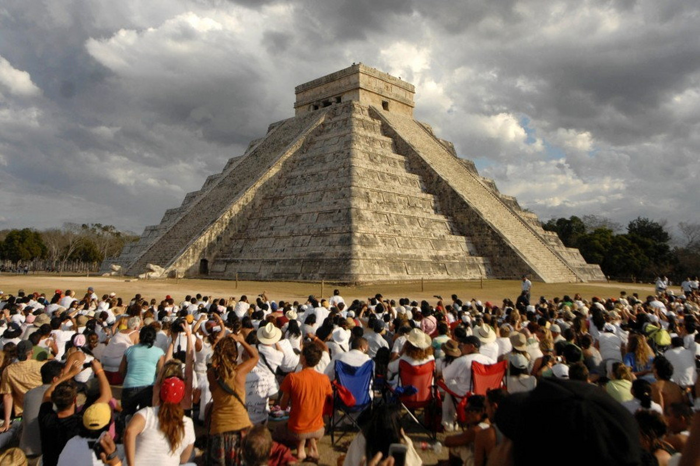

Конец света в 2012 году — комплекс широко распространённых эсхатологических заблуждений, согласно которым 21 (или 23) декабря 2012 года
должен был случиться глобальный катаклизм или произойти фундаментальная трансформация мира
. Эта дата рассматривалась как последняя в 5125-годичном цикле мезоамериканского
календаря, построенного на основе длинного счёта . Для обоснования даты были предложены различные теории, такие как теория «галактического выравнивания
Галактическое выравнивание» и нумерологические формулы, но ни одна из них не была признана в научной среде.
Учёные из различных областей науки отвергали возможность всепланетного катаклизма в 2012 году. В частности, профессиональные майянисты заявляют, что ни в одном из сохранившихся
эпиграфических памятников классических майя нет свидетельств или предсказаний о надвигающейся гибели человечества и что домыслы о «конце» длинного счёта в 2012 году искажают представления
об истории и культуре майя. Авторитетные астрономы и специалисты из других областей объявили теории о «конце света» лженаучными, так как они противоречат данным наблюдений и
«отвлекают от куда более насущных проблем, таких как глобальное потепление и утрата биологического разнообразия